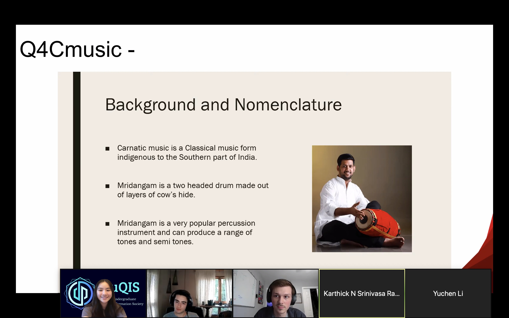
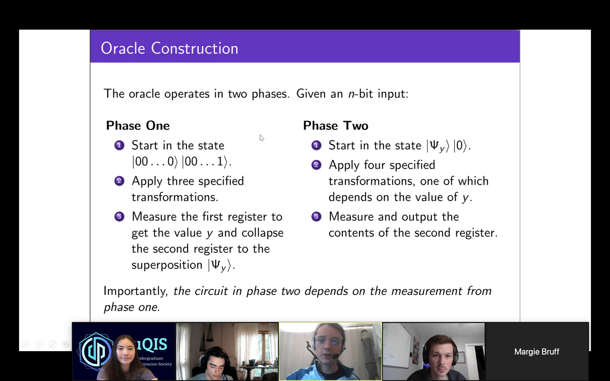

Blog
IBM Qiskit SummerJam at Duke
Last week (6/24-7/1), Duke Undergraduate Quantum Information Society (DuQIS), UNC Society of Physics Student (SPS), and NCSU Quantum Information Club co-hosted the IBM Qiskit Community Summer Jam Hackathon (North Carolina). We had 120 participants registered in the North Carolina region, and 16 teams submitted an entry for the final judging phase. Participants ranged from high school students to graduate students, many of whom had little experience with quantum computing prior to the hackathon.
Due to the outbreak of the global pandemic, IBM decided to host the virtual hackathon in place of its annual Qiskit Camps around the world. As a result, the participants of the community hackathon were expected to collaborate over platforms such as Zoom or Skype. The hackathon was also designed to be week-long so that participants who have other commitments over the summer could participate as well.
After the 7-day hacking phase was over, the participants in the Triangle gathered over Zoom to present their projects and share with their peers what they have learned over the past week. You can find the list of projects submitted here. Given the success of this virtual hackathon, Brian Ingmanson of IBM, the Summer Jam’s organizer, expressed hope that they would continue to host similar events virtually, such as another quantum hackathon in a few months. So, if you are a student and have missed this chance, stay tuned for another one! In the meantime, you can catch up with the resources listed at the DuQIS Study Guide.
Good luck to all teams in this hackathon, as judging and results come out early next week.
Go Duke!